大數據與機器學習｜觀念圖解複習
這一章的觀念本身不難，難在名字很多、而且長得像：Hadoop 家族有 HDFS、YARN、MapReduce；Spark 家族有 Spark SQL、Streaming、MLlib、GraphX；機器學習這邊又有標準化、歸一化、獨熱編碼、PCA、自動編碼器、Bagging、Boosting。每個名字背後的觀念都說得清楚，麻煩的是「誰負責什麼」沒有放在同一張表裡比較過。所以每個單元照「為什麼需要它 → 一步步搭起來 → 名詞各自定義 → 整合比較表 → 記憶鉤子 → 易錯提醒」排列。
- 單元 ① 的「Hadoop／Spark 組件速查表」和單元 ⑤ 的「機器學習框架速查表」都用黃框標出來，工具名稱對應先背這兩張。
- 背法：看「一句話功能」那一欄，說得出組件或工具的名字，就過關了。
先看全貌全章地圖：一筆大數據從存放到被解釋
本章的工具和方法，剛好可以排成一條流程：先存起來 → 分配電腦資源 → 處理特徵 → 訓練模型 → 調參與解釋。後面五個單元，就是沿著這條線一站一站講。
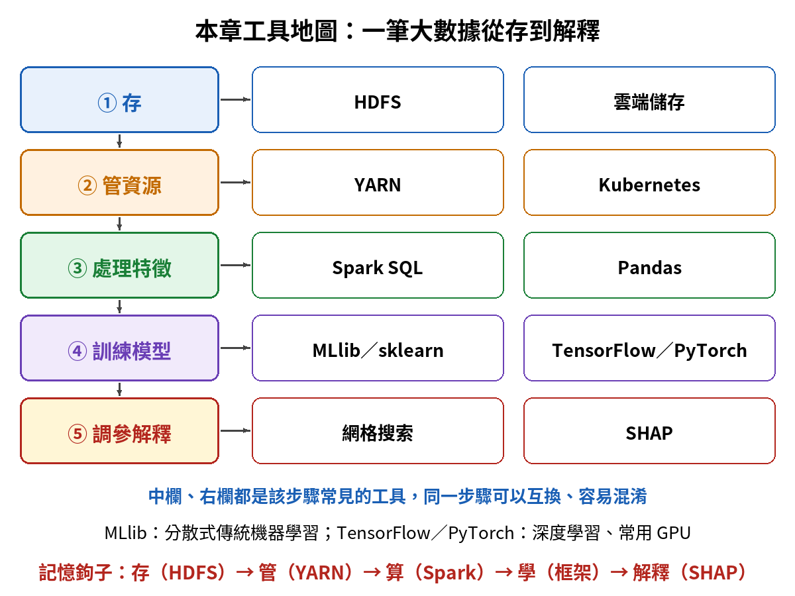
單元 ①Hadoop 生態系（HDFS、YARN、MapReduce）與 Spark
為什麼需要它？ 資料大到一台電腦裝不下、算不完的時候，就得把工作分給很多台電腦一起做。但很多台電腦一起做事，會冒出三個問題：① 資料要放哪裡、壞一台怎麼辦？② 誰可以用哪幾台電腦？③ 一件大工作怎麼拆給大家、最後再合起來？ Hadoop 用三個組件分別回答這三個問題；Spark 則是後來出現、把第 ③ 件事做得更快的計算引擎。
一步步搭起來（用「物流中心」比喻）
- 先有一群電腦（叢集）。用很多台一般規格的伺服器，而不是一台超級電腦，比較便宜也比較好擴充。
- 蓋倉庫＝HDFS。把一個超大檔案切成很多「區塊」，分散放到不同電腦，而且每塊都存好幾份副本。某台電腦壞了，資料還能從別台拿到。
- 設調度中心＝YARN。很多程式同時要算，總要有人決定「誰用哪幾台電腦的 CPU 和記憶體」。YARN 就是叢集的資源管理員。
- 派工人＝MapReduce。把工作拆成「Map：各台電腦分頭處理自己那份資料」和「Reduce：把結果合起來」兩段。
- 換更快的工人＝Spark。MapReduce 每一步都把結果寫回磁碟，反覆運算時很慢；Spark 把中間結果盡量留在記憶體，同一份資料要算很多輪時特別有感。Spark 可以跑在 YARN 上、讀 HDFS 的資料，也可以單獨部署。
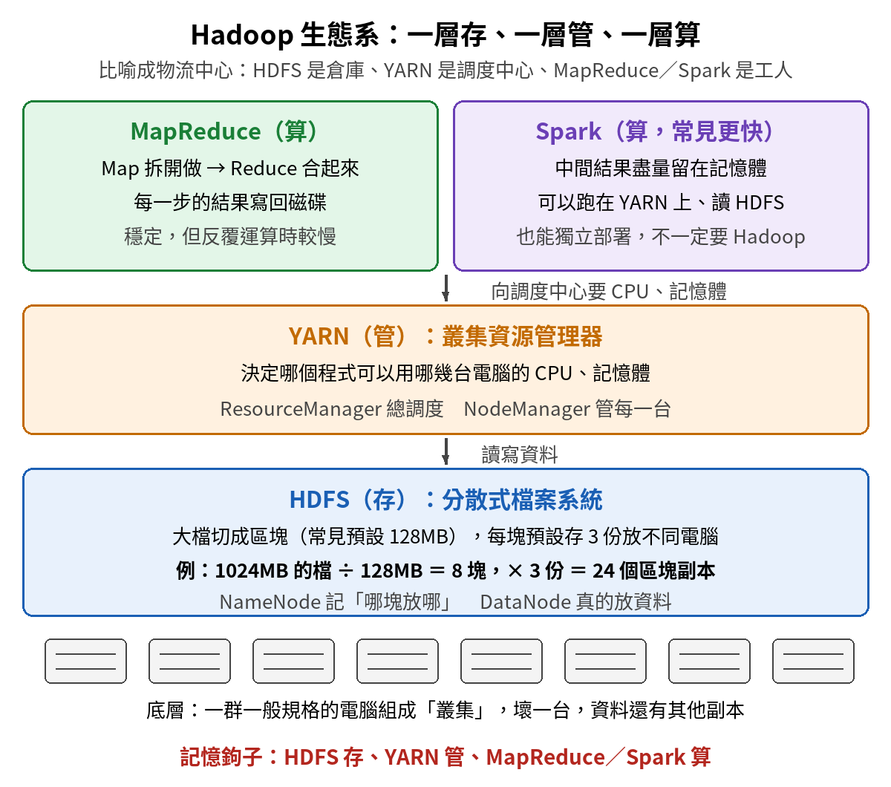
名詞各自定義
HDFS（Hadoop Distributed File System，Hadoop 分散式檔案系統）
- 是什麼：Hadoop 的儲存層：在一般規格電腦組成的大型叢集上，可靠地儲存超大檔案。
- 怎麼運作：檔案切成固定大小的區塊（常見預設 128MB），每塊預設複製 3 份放在不同電腦。NameNode 記錄「哪個區塊放在哪台」，DataNode 實際存放資料。上圖例子：1024MB 的檔切成 8 塊，× 3 份＝ 24 個區塊副本。
- 適合：一次寫入、之後大量讀取的超大檔案，例如日誌、感測器紀錄。
- 不擅長：大量小檔案、需要隨機改寫某一小段的資料、要求毫秒級回應的查詢。
YARN（Yet Another Resource Negotiator）
- 是什麼：Hadoop 的資源管理層（Hadoop 2 之後出現），負責把叢集的 CPU、記憶體分配給不同的應用程式。
- 怎麼運作：ResourceManager 是總調度，掌握整個叢集的資源；每台電腦上的 NodeManager 回報自己還有多少資源；每個應用程式有自己的 ApplicationMaster，向 ResourceManager 申請「容器」（一份 CPU＋記憶體）來執行工作。
- 重點：YARN 自己不存資料、也不做計算；它讓 MapReduce、Spark 等不同引擎可以共用同一個叢集。
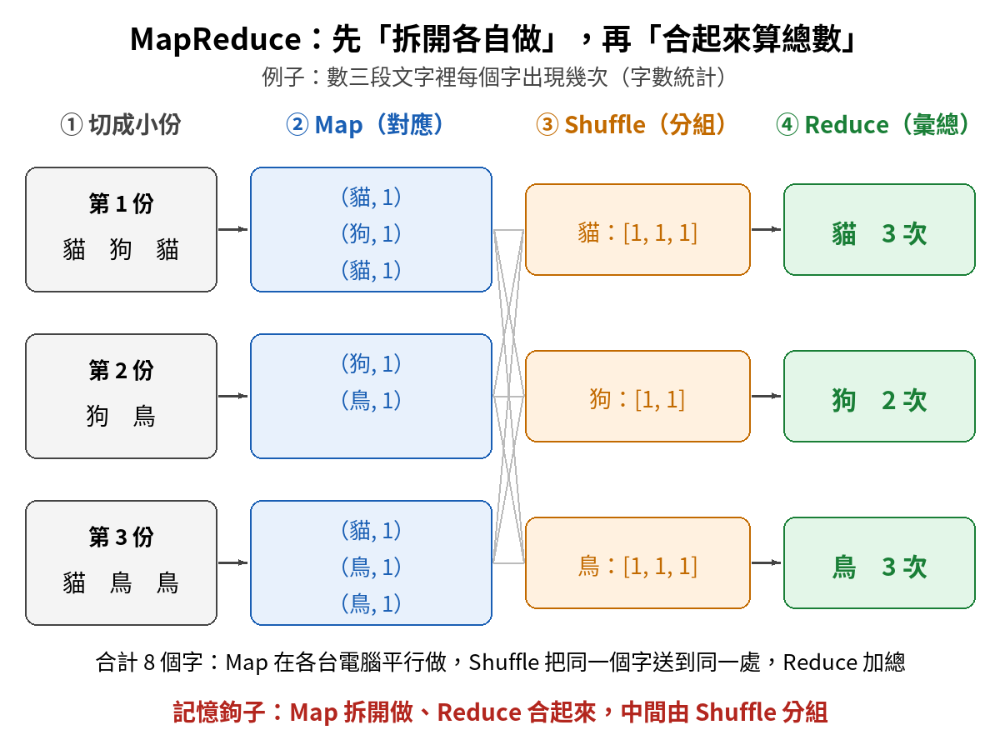
MapReduce
- 是什麼：一種分散式計算的程式設計模型，也是 Hadoop 最早的計算引擎（用 Java 寫成）。
- 怎麼運作：Map（對應）：每台電腦處理自己那份資料，輸出「鍵、值」配對，例如（貓, 1）。Shuffle（分組）：系統把同一個鍵的值送到同一處，過程中會自動排序、合併。Reduce（彙總）：把同一鍵的值合起來，例如貓 1＋1＋1＝ 3。
- 優缺點：穩定、容錯好、適合超大批次工作；但每一步結果都寫回磁碟，需要反覆運算（例如機器學習訓練）時較慢。
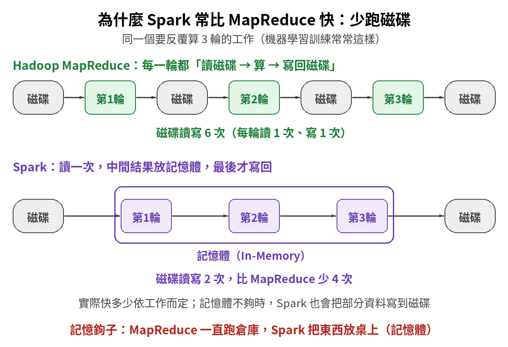
Apache Spark
- 是什麼：通用的分散式計算引擎，源自加州大學柏克萊分校，主要用 Scala 寫成，提供 Scala、Java、Python（PySpark）、R、SQL 等介面。
- 為什麼常比 MapReduce 快：記憶體內計算（In-Memory Computing）：中間結果盡量留在記憶體，減少磁碟讀寫。上圖同樣反覆算 3 輪，MapReduce 讀寫磁碟 6 次、Spark 只要 2 次。另外 Spark 會先把整串步驟排成一張執行計畫圖（DAG），再一起最佳化執行。
- 注意：記憶體不夠時 Spark 也會把部分資料寫到磁碟；實際快多少依工作型態而定，反覆運算的工作差距最明顯。速度差異主要來自設計，和程式語言關係不大。
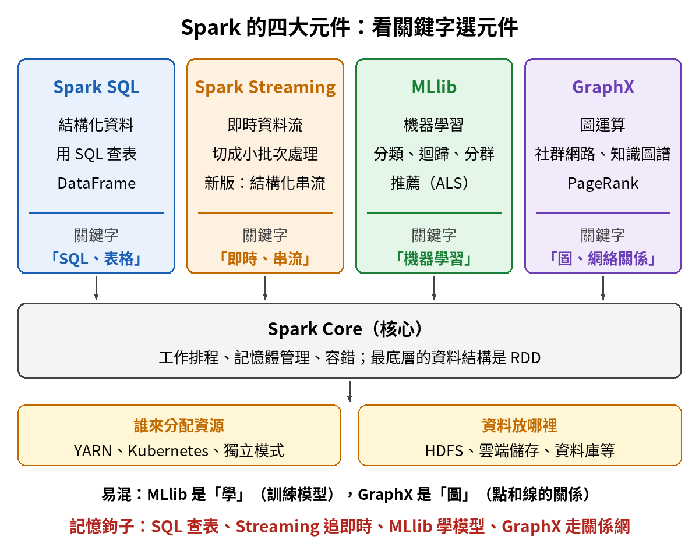
Spark 的四大元件（都建在 Spark Core 上）
- Spark SQL：處理結構化資料，可以用 SQL 或 DataFrame 查詢、彙總表格。
- Spark Streaming：處理即時資料流，把連續進來的資料切成小批次處理。新專案多改用以 Spark SQL 引擎為基礎的 Structured Streaming（結構化串流）。
- MLlib：Spark 的機器學習函式庫：分類、迴歸、分群、推薦（ALS）、特徵處理，以及把步驟串起來的 ML Pipeline。
- GraphX：Spark 的圖運算元件：處理「點和線」的資料，例如社群網路、知識圖譜，內建 PageRank、連通元件等演算法。這裡的「圖」不是圖片，而是第 8 章社群網路分析裡「點（人）和線（關係）」組成的網絡。
- Spark Core：最底層的核心：工作排程、記憶體管理、容錯，以及最基本的資料結構 RDD。
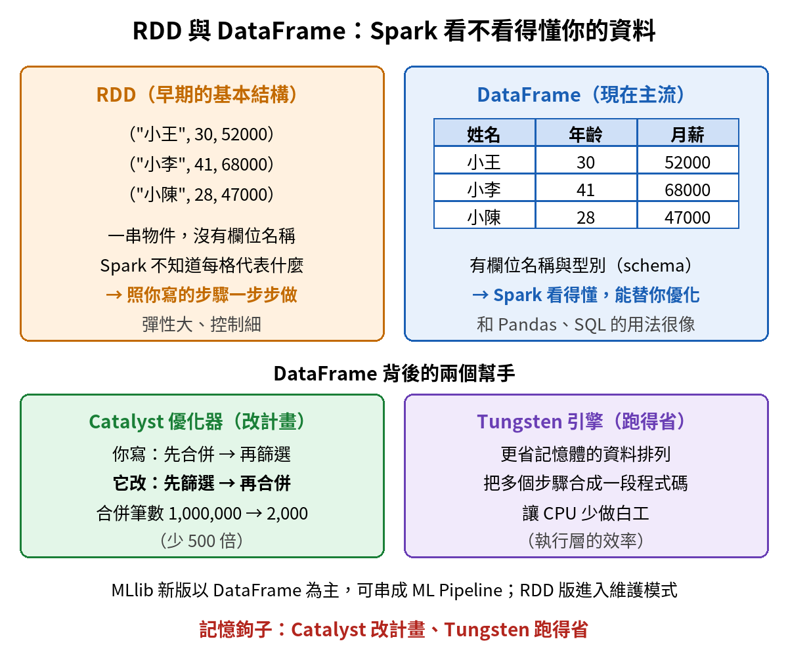
RDD（Resilient Distributed Dataset，彈性分散式資料集）
- 是什麼：Spark 最早、最底層的資料結構：分散在很多台電腦上的一串物件。
- 特性：不可變更；記得自己是「從哪份資料、經過哪些步驟算出來的」（血緣），某台電腦壞了可以照血緣重算回來，這就是「彈性」。
- 限制：沒有欄位名稱和型別，Spark 看不懂內容，大多照你寫的步驟執行，比較難自動優化。
DataFrame
- 是什麼：有欄位名稱與型別（schema）的分散式表格，用法和 Pandas、SQL 很像。
- 優勢：因為 Spark 看得懂資料結構，可以交給 Catalyst 優化器改寫執行計畫，再由 Tungsten 引擎有效率地執行。
Catalyst 優化器與 Tungsten 引擎
- Catalyst：Spark SQL／DataFrame 的查詢優化器：把你寫的查詢分析成邏輯計畫，套用規則改寫（例如先篩選再合併、提早丟掉用不到的欄位），再選出實際執行的物理計畫。上圖例子：先篩選後，要合併的筆數從 1,000,000 降到 2,000，少 500 倍。
- Tungsten：Spark 的執行層效率改善計畫：用更省空間的二進位格式在記憶體裡排資料、把好幾個步驟合成一段程式碼一起跑（全階段程式碼生成），讓 CPU 少做白工。
- 一句話分：Catalyst 決定「怎麼做比較聰明」，Tungsten 負責「做的時候比較省」。
MLlib 的兩套 API
- RDD-based API（spark.mllib）：早期版本，Spark 2.0 起進入維護模式，主要修錯、不再加新功能。
- DataFrame-based API（spark.ml）：現在的主要 API：介面比較統一好用、可以享受 Catalyst 與 Tungsten 的優化，還能用 ML Pipeline 把「特徵轉換 → 訓練 → 預測」串成一條固定流程。
- Pipeline 的零件：Transformer（轉換器，把一張 DataFrame 變成另一張，例如已訓練好的模型）、Estimator（估計器，用資料訓練後產生 Transformer，例如還沒訓練的演算法）。
常一起出現、容易混淆的其他名字（對照用）
- Hive：在 Hadoop 上用類似 SQL 的語法查詢資料的工具。
- HBase：建在 HDFS 上的 NoSQL 資料庫，適合大量資料的即時讀寫（第 5 章的欄族式資料庫）。
- Kafka：訊息佇列與串流平台，負責「接住並傳送」不斷進來的事件，常放在 Spark Streaming 前面。
整合比較表
Hadoop／Spark 組件速查表
| 組件 | 一句話功能 | 屬於 | 看到這些關鍵字就想到它 | 口訣 | 容易搞混 |
|---|---|---|---|---|---|
| HDFS | 在叢集上可靠地存超大檔案 | Hadoop 存 | 分散式檔案、區塊、副本、標準硬體 | 倉庫 | YARN、記憶體內計算 |
| YARN | 分配 CPU、記憶體給各個應用程式 | Hadoop 管 | 資源管理、排程、叢集資源 | 調度中心 | MapReduce |
| MapReduce | 拆開做（Map）再合起來（Reduce） | Hadoop 算 | Map 和 Reduce、批次處理 | 拆開做、合起來 | 中間的 Shuffle 步驟 |
| Spark Core／RDD | 核心引擎；最底層資料結構 | Spark | 記憶體內計算、血緣容錯 | 桌上作業 | MapReduce |
| Spark SQL | 用 SQL／DataFrame 查結構化資料 | Spark | SQL、表格、結構化 | 查表 | MLlib |
| Spark Streaming | 處理即時資料流 | Spark | 即時、串流、事件 | 追即時 | Spark SQL |
| MLlib | Spark 的機器學習函式庫 | Spark | 機器學習、分類、推薦 ALS | 學模型 | GraphX |
| GraphX | Spark 的圖運算元件 | Spark | 社群網路、知識圖譜、PageRank | 走關係網 | MLlib |
| Catalyst | 改寫查詢的執行計畫 | Spark SQL | 查詢優化 | 改計畫 | Tungsten |
| Tungsten | 讓記憶體與 CPU 跑得更省 | Spark 執行層 | 記憶體管理、程式碼生成 | 跑得省 | Catalyst |
兩組最常被拿來比的，再並排一次：
| 比較項目 | Hadoop MapReduce | Apache Spark |
|---|---|---|
| 中間結果放哪 | 每一步寫回磁碟 | 盡量留在記憶體 |
| 反覆運算（如機器學習） | 較慢，每輪都讀寫磁碟 | 常見明顯較快 |
| 程式寫法 | 只有 Map、Reduce 兩種動作，複雜工作要串很多個 | 很多現成操作，可以一路串起來 |
| 主要開發語言 | Java | Scala（另提供 Python、R、SQL 介面） |
| 即時串流 | 不擅長，以批次為主 | 有 Streaming／Structured Streaming |
| 和 Hadoop 的關係 | Hadoop 原生的計算引擎 | 可以跑在 YARN 上、讀 HDFS，也可單獨部署 |
| 比較項目 | RDD-based API | DataFrame-based API |
|---|---|---|
| 資料長什麼樣 | 一串物件，沒有欄位名稱 | 有欄位名稱與型別的表格 |
| Spark 能不能自動優化 | 較難，照你寫的步驟跑 | 可以，靠 Catalyst＋Tungsten |
| 在 MLlib 的地位 | 維護模式（spark.mllib） | 主要 API（spark.ml） |
| ML Pipeline | 沒有 | 有，可串成固定流程 |
| 支援的語言 | Scala、Java、Python | Scala、Java、Python、R |
- 「HDFS 存、YARN 管、MapReduce 算」：倉庫、調度中心、工人。
- 「Map 拆開做、Reduce 合起來」：名字本身就是那兩個動作。
- 「Spark 把東西放桌上（記憶體），MapReduce 一直跑倉庫（磁碟）」。
- 「SQL 查表、Streaming 追即時、MLlib 學模型、GraphX 走關係網」。
- 「Catalyst 改計畫、Tungsten 跑得省」；DataFrame 看得懂欄位，所以能被優化。
單元 ②特徵工程手法對照：縮放、編碼、滯後與窗口、降維、特徵選擇
為什麼需要它？ 模型只看得懂數字，而且很「死腦筋」：欄位的單位差太多，它會以為大數字比較重要；類別寫成文字，它讀不懂；欄位太多，它會被雜訊干擾、算很久；時間序列只給今天的值，它不知道昨天發生什麼事。特徵工程就是在訓練模型之前，把原始資料整理成模型好用的樣子。最常被問的是：看到一個問題，選出對應的手法。
一步步搭起來（一張客戶銷售表的整理流程）
- 類別變數字＝編碼。「顏色：紅、綠、藍」換成 0 和 1 的欄位（獨熱編碼），類別太多時用特徵雜湊。
- 統一尺度＝特徵縮放。年齡（幾十）和年收入（幾十萬）放在一起，用標準化或歸一化換成同一把尺。
- 從時間造新欄位＝滯後與窗口特徵。「昨天的銷售」「過去 7 天平均」都是把過去的資訊搬成今天的欄位。
- 欄位太多時＝特徵選擇或降維。特徵選擇是挑出有用的原始欄位；降維是把很多欄位壓縮成少數幾個新欄位（PCA、自動編碼器）。
名詞各自定義
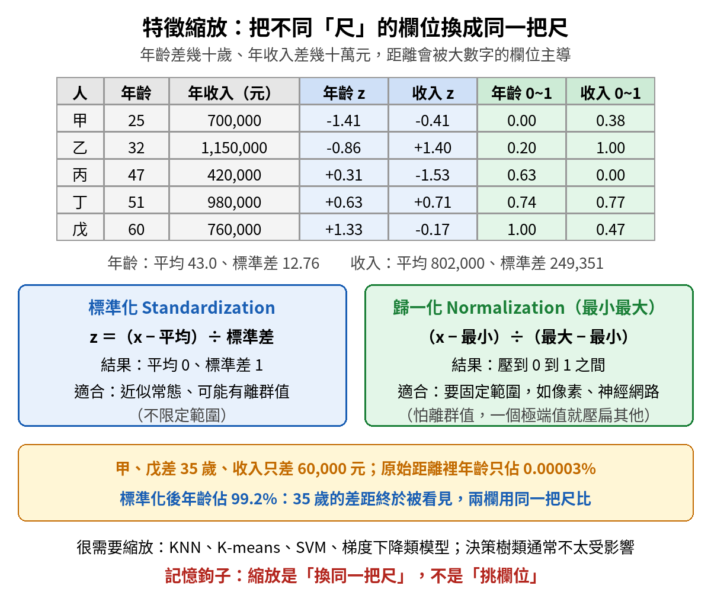
特徵縮放 Feature Scaling
- 是什麼：把不同單位、不同範圍的數值欄位，換成可以互相比較的尺度。它不新增也不刪除欄位，只改數值的大小範圍。
- 為什麼需要：很多演算法靠「距離」或「梯度」學習。上圖甲、戊兩人差 35 歲、收入只差 60,000 元，原始距離裡年齡只佔約 0.00003%，幾乎被收入淹沒；標準化後年齡佔 99.2%，真正的差別才被看見。
- 誰特別需要：KNN、K-means、SVM、用梯度下降訓練的模型（邏輯迴歸、神經網路）、PCA。決策樹、隨機森林這類樹模型通常不太受影響。
標準化 Standardization（z 分數）
- 公式：z ＝（x − 平均）÷ 標準差。
- 結果：平均變成 0、標準差變成 1，數值沒有固定上下限。
- 適合：資料接近常態分布、或可能有離群值的情況；很多傳統機器學習演算法的常見選擇。
歸一化 Normalization（最小最大縮放）
- 公式：（x − 最小值）÷（最大值 − 最小值）。
- 結果：壓到 0 到 1 之間。
- 適合／注意：需要固定範圍時，例如影像像素、神經網路的輸入。一個極端值就會把其他值擠在一起，對離群值敏感。另外，有些教材或工具的「Normalization」是指把每一列資料向量縮成長度 1，看到時留意上下文。
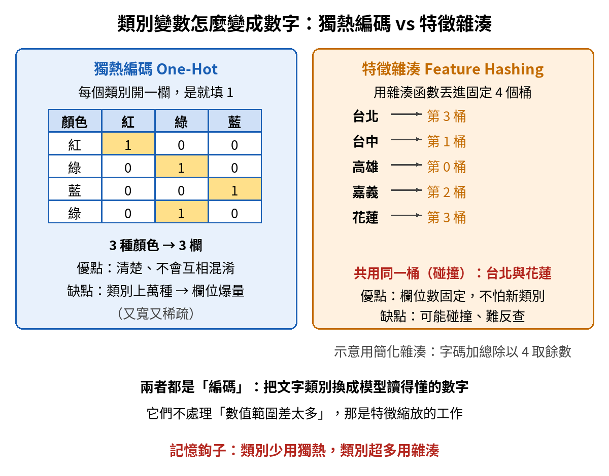
獨熱編碼 One-Hot Encoding
- 是什麼：把一個類別欄位拆成多個 0／1 欄位，每個類別一欄，屬於哪類就在那欄填 1。
- 適合：類別數量不多、類別之間沒有大小順序（例如顏色、縣市）。
- 缺點：類別上萬種時欄位爆量，表格又寬又稀疏。它是編碼，不是縮放。
特徵雜湊 Feature Hashing（雜湊技巧）
- 是什麼：用雜湊函數把類別丟進固定數量的桶，桶數決定欄位數。
- 優缺點：欄位數固定、不用事先記住所有類別、新類別也能處理；但不同類別可能落在同一桶（碰撞，上圖台北與花蓮），而且難以從桶反查原本是哪個類別。
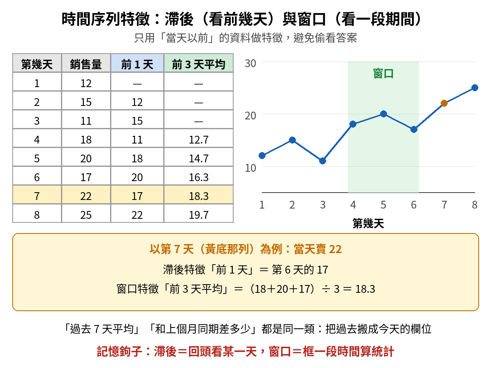
滯後特徵 Lag Features
- 是什麼：把過去某個時間點的值，當成今天的一個欄位。例如「前 1 天銷售」「上個月同期銷售」。
- 例子：上圖第 7 天的「前 1 天」＝第 6 天的 17。「和去年同月比多了多少」就是今天的值減掉往回推一段固定時間的值。
窗口特徵 Window Features（滾動統計）
- 是什麼：框住一段過去的時間算統計量，例如過去 7 天平均、過去 30 天最大值。
- 例子：上圖第 7 天的「前 3 天平均」＝（18＋20＋17）÷ 3 ＝ 18.3。
- 注意：做特徵時要用「當天以前」的資料，否則等於偷看答案（資料洩漏），模型上線後表現常會明顯變差。
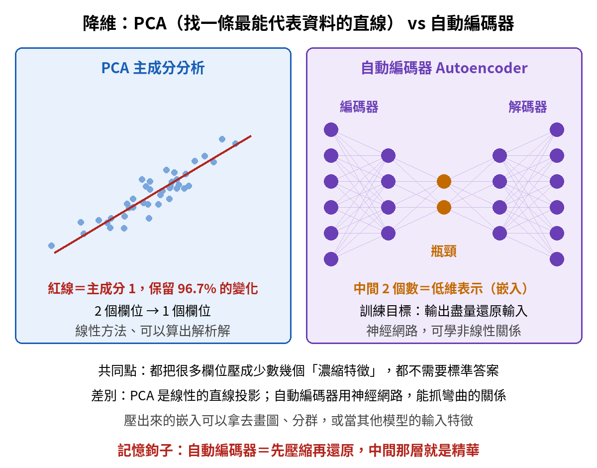
降維 Dimensionality Reduction
- 是什麼：把很多欄位壓縮成少數幾個新欄位，盡量保留原本的資訊。新欄位通常不是原本的任何一欄，而是混合出來的。
- 用途：加快訓練、減少雜訊、畫成 2D／3D 圖來看、當成其他模型的輸入特徵。
主成分分析 PCA
- 是什麼：線性降維方法：找出資料變化最大的方向（主成分），把資料投影上去。
- 例子：上圖 40 個點幾乎排成一條斜線，第一主成分就保留了 96.7% 的變化，兩個欄位可以壓成一個。
- 注意：PCA 對尺度敏感，通常先做標準化；它是降維，不是縮放。
自動編碼器 Autoencoder
- 是什麼：一種神經網路：前半段「編碼器」把輸入壓到很窄的中間層（瓶頸），後半段「解碼器」再盡量還原成原本的輸入。
- 學到什麼：為了能還原，瓶頸那幾個數字被迫保留最重要的資訊，這就是資料的低維表示（嵌入）。訓練不需要人工標註答案。
- 和 PCA 的差別：PCA 找的是直線（線性）方向；自動編碼器有非線性的激活函數，能學到彎曲、複雜的關係，代價是需要較多資料和運算。
特徵選擇 Feature Selection
- 是什麼：從原本的欄位中挑出一部分保留，其餘丟掉；保留下來的欄位內容不變。
- 常見做法：過濾法（先用相關係數等統計量篩）、包裝法（換不同欄位組合實際訓練比較）、嵌入法（模型訓練時順便挑，例如 Lasso 迴歸、樹模型的重要性）。
- 和降維的差別：特徵選擇是「挑」，原欄位保留原樣；降維是「壓」，產生新的混合欄位。兩者都不處理數值範圍不一的問題。
整合比較表
| 手法 | 做什麼 | 輸入 → 輸出的變化 | 何時用 | 代表方法 | 容易搞混 |
|---|---|---|---|---|---|
| 特徵縮放 | 換成同一把尺 | 欄位數不變，數值範圍改變 | 欄位單位差很多；用距離、梯度的模型 | 標準化、歸一化 | 特徵選擇 |
| 類別編碼 | 文字類別變數字 | 1 欄類別 → 多欄 0／1（或固定桶數） | 有顏色、城市這類文字欄位 | 獨熱編碼、特徵雜湊 | 特徵縮放 |
| 滯後／窗口特徵 | 把過去搬到今天 | 新增「前幾天」「過去 N 天統計」欄位 | 時間序列預測 | 前 1 天值、7 天平均 | 降維 |
| 降維 | 壓縮成少數新欄位 | 很多欄 → 少數混合新欄 | 欄位太多、想視覺化、要嵌入 | PCA、自動編碼器 | 特徵選擇 |
| 特徵選擇 | 挑出有用的欄位 | 很多欄 → 其中幾欄（原樣保留） | 欄位太多、想提升可解釋性 | 過濾、包裝、嵌入法 | 降維、縮放 |
- 縮放是「換同一把尺」、編碼是「文字變數字」、降維是「壓縮」、選擇是「挑欄位」、滯後與窗口是「把過去搬到今天」。
- 標準化：平均 0、標準差 1；歸一化：壓到 0～1。看到「數值範圍差很多」就想到縮放。
- 自動編碼器＝先壓縮再還原，中間那層就是精華（嵌入）。
單元 ③集成學習：Bagging（隨機森林）vs Boosting（AdaBoost、GBDT）
為什麼需要它？ 單一個模型常有兩種毛病：一種是不穩定，資料換一點點、結果就差很多（變異大，例如一棵很深的決策樹）；另一種是學不夠，太簡單抓不到規律（偏差大，例如只切一刀的小樹）。集成學習的想法是「三個臭皮匠勝過一個諸葛亮」：把很多個模型組合起來。組合的方式主要有兩種，剛好各治一種毛病。
一步步搭起來
- 先有「弱學習器」。單獨使用時只比亂猜好一點的簡單模型，最常見的是很淺的決策樹。
- Bagging 路線：大家同時做、一起投票。從原始資料有放回地抽樣出好幾份，每份各訓練一棵樹，最後分類用多數決、數值用平均。每棵樹的錯誤方向不同，平均起來就穩定了。
- Bagging 進階：隨機森林。除了抽樣資料，每次分岔時也只隨機挑一部分欄位來選，讓樹和樹更不一樣，投票效果更好。
- Boosting 路線：一個接一個、專門訂正。先訓練第 1 個弱學習器，看它錯在哪；第 2 個特別加重那些分錯的資料；第 3 個再補第 2 個的錯……最後依各自的表現加權合成一個強學習器。
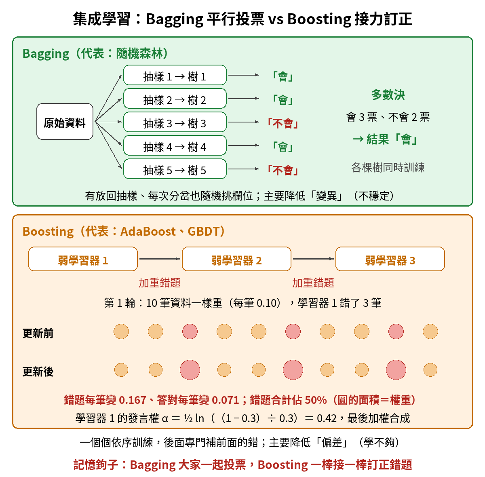
上圖 Boosting 的數字是照 AdaBoost 的公式實際算的：10 筆資料一開始每筆權重 0.10，第 1 個學習器錯了 3 筆，錯誤率 0.3，它的發言權 α ＝ ½ ln（0.7 ÷ 0.3）≈ 0.42。更新後分錯的每筆變 0.167、分對的每筆變 0.071，分錯的 3 筆合計佔了 50%，下一個學習器自然會把注意力放在它們身上。
名詞各自定義
集成學習 Ensemble Learning
- 是什麼：訓練多個模型，再把它們的預測組合起來，通常比單一模型更準、更穩。
- 三大類：Bagging（平行、投票）、Boosting（依序、訂正）、Stacking（用另一個模型學「怎麼組合」前面幾個模型的預測）。
Bagging（Bootstrap Aggregating，自助聚合）
- 怎麼運作：有放回抽樣出多份資料 → 各自平行訓練 → 投票或平均。
- 主要改善：降低變異（模型不穩定的問題）。
- 代表：隨機森林 Random Forest：Bagging ＋每次分岔隨機挑欄位。
Boosting（提升法）
- 怎麼運作：依序訓練，每個新的弱學習器專門修正前面的錯誤，最後加權合成。
- 主要改善：降低偏差（學不夠的問題）；但如果輪數太多也可能過度配適。
- AdaBoost：每輪加重被分錯樣本的權重，下一個學習器就會更重視它們。
- 梯度提升 Gradient Boosting（GBDT）：每棵新樹去學「前面模型還差多少」（殘差，更精確說是損失函數的負梯度）。XGBoost、LightGBM、CatBoost 都是這一路的實作。
不是集成學習、但常被放在一起比的方法
- K-平均 K-means：非監督式分群，把資料分成 K 群，沒有「弱學習器組合」的概念。
- 主成分分析 PCA：降維方法，也是非監督式，不是用來預測的監督式演算法。
整合比較表
| 比較項目 | Bagging | Boosting |
|---|---|---|
| 訓練順序 | 平行：各棵同時訓練、互不影響 | 依序：一個接一個，後面看前面的錯 |
| 每個模型看的資料 | 各自有放回抽樣的一份 | 同一份資料，但分錯的權重變重（或改學殘差） |
| 怎麼合成 | 多數決或平均（每個一票） | 加權合成（表現好的發言權大） |
| 主要解決 | 變異大、不穩定 | 偏差大、學不夠 |
| 代表演算法 | 隨機森林 | AdaBoost、GBDT、XGBoost、LightGBM |
| 比喻 | 一群人各自作答再投票 | 接力賽，每一棒專門訂正前一棒的錯 |
| 關鍵字 | 抽樣、平行、投票、隨機挑欄位 | 依序、逐步、聚焦之前分錯的、弱變強 |
- Bagging 大家一起投票（平行）；Boosting 一棒接一棒訂正錯誤（依序）。
- 看到「逐步」「加權」「之前分錯的」想到 Boosting；看到「多棵樹投票」「隨機抽樣」想到隨機森林（Bagging）。
- Bagging 治不穩定（變異），Boosting 治學不夠（偏差）。
單元 ④推薦系統：協同過濾、矩陣分解（SVD、ALS）
為什麼需要它？ 影音平台有上萬部片，每個人只看過其中一小部分。把「每個人對每部片的評分」排成一張表，絕大部分格子是空的。推薦系統要做的事，就是猜出空格裡的分數，再把猜得高的片推薦給那個人。常見的問法是：哪種方法專門用「大家過去的評分」來補空格？
一步步搭起來
- 排出評分表（使用者 × 物品）。列是人、欄是片，格子是評分，沒看過就是空格。
- 協同過濾的直覺。「和你口味相近的人喜歡的，你可能也喜歡」。不用知道片的內容，只看大家的評分模式。
- 矩陣分解。假設每個人有幾個隱藏的「口味分數」（例如多愛動作、多愛浪漫），每部片也有對應的「特性分數」。把大評分表拆成「人 × 口味」和「片 × 特性」兩張小表，兩張小表相乘就能還原評分表，原本空的格子也會算出數字。
- 用 ALS 把兩張小表算出來。先固定「片」那張表，解出每個人的口味；再固定「人」那張，解出每部片的特性；輪流算到穩定。
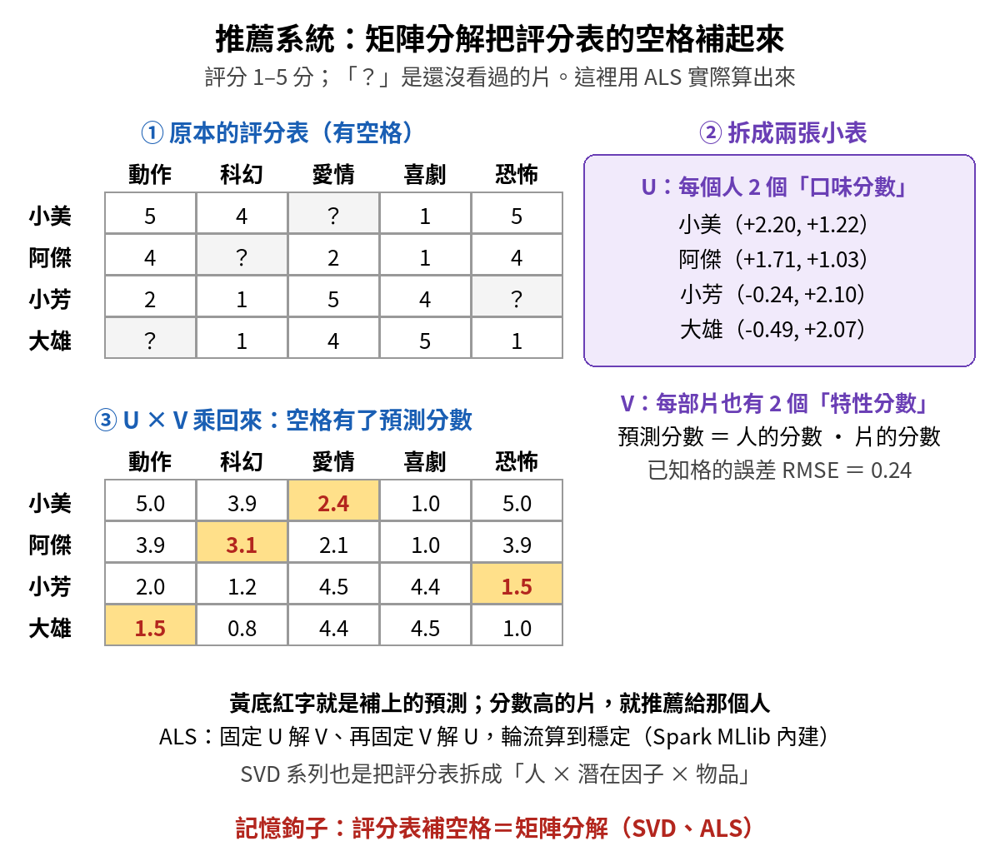
上圖是用 ALS（2 個潛在因子）實際算出來的：已知格子的誤差 RMSE 約 0.24，四個空格補上的預測是小美×愛情片 2.4、阿傑×科幻片 3.1、小芳×恐怖片 1.5、大雄×動作片 1.5。小美和阿傑口味接近（都愛動作、恐怖），所以阿傑沒看過的科幻片，系統預測他會給中上的分數。
名詞各自定義
協同過濾 Collaborative Filtering
- 是什麼：只根據使用者與物品的互動紀錄（評分、點擊、購買）來推薦，不需要知道物品內容。
- 兩種做法：記憶式：直接算相似度，例如「找口味相近的人」（使用者為基礎）或「找常被一起喜歡的物品」（物品為基礎）。模型式：從評分表學出模型，矩陣分解就是最具代表性的模型式協同過濾。
- 缺點：新使用者、新物品沒有紀錄時很難推薦（冷啟動問題）。
內容式推薦 Content-based（對照用）
- 是什麼：根據物品本身的特徵（類型、演員、關鍵字）推薦和你看過的相似的東西。
- 和協同過濾的差別：內容式看「東西像不像」，協同過濾看「人的行為像不像」。實務上常把兩者混合。
矩陣分解 Matrix Factorization
- 是什麼：把稀疏的評分矩陣 R 近似拆成兩個小矩陣相乘：R ≈ U ×（V 的轉置）。U 每列是一個人的潛在因子，V 每列是一個物品的潛在因子。
- 預測方式：某人對某物品的預測分數＝兩組潛在因子的內積（對應位置相乘再加總）。
- 潛在因子：模型自己學出來的隱藏維度，不一定有人看得懂的名稱，可以想成「口味方向」。
SVD（奇異值分解）在推薦系統裡
- 原本的意思：線性代數裡把一個完整矩陣拆成三個矩陣（U、Σ、V 的轉置）的方法，PCA 也常用它計算。
- 推薦系統裡：評分表有大量空格，傳統 SVD 不能直接處理空格，所以常用「只拿已知格子來訓練」的 SVD 式矩陣分解（Netflix 競賽時期很有名，常被稱為 Funk SVD）。在推薦的情境看到「SVD」，通常指的就是這一類矩陣分解。
ALS（Alternating Least Squares，交替最小平方法）
- 怎麼運作：固定 V 解 U（變成一般的最小平方問題），再固定 U 解 V，交替進行到穩定。
- 特色：每一步都容易平行化，適合大資料；Spark MLlib 內建 ALS 推薦演算法，也支援「點擊、觀看次數」這類隱式回饋。
不是為評分表設計、但常被拿來比的方法
- 線性迴歸：用一組特徵欄位預測一個連續數值，例如用坪數、屋齡預測房價。它需要每筆資料都有完整的特徵，本身不會利用「評分表裡人和物品的交叉關係」，所以不是補評分表空格的典型方法。
- K-means：把資料分群，可以拿來把相似的人分組，但它不直接預測某人對某物品的分數。
- 決策樹：依特徵一層層判斷做分類或迴歸，同樣不是針對評分矩陣設計的。
整合比較表
| 方法 | 一句話定義 | 需要什麼資料 | 怎麼預測 | 優點 | 容易搞混 |
|---|---|---|---|---|---|
| 記憶式協同過濾 | 找口味相近的人或常一起被喜歡的物品 | 評分表 | 用相似者的評分加權平均 | 直覺、好解釋 | 內容式推薦 |
| 矩陣分解 | 評分表拆成人、物品兩張潛在因子表 | 評分表 | 兩組因子內積 | 能補空格、可擴充到大資料 | 線性迴歸 |
| SVD（推薦用） | 只用已知格訓練的分解法 | 評分表 | 同上 | 經典、效果好 | 傳統完整 SVD |
| ALS | 交替固定一邊、解另一邊 | 評分表或隱式回饋 | 同上 | 易平行，Spark MLlib 內建 | 梯度下降 |
| 內容式推薦 | 推薦和你看過內容相似的物品 | 物品特徵 | 比對物品相似度 | 新物品也能推 | 協同過濾 |
- 「評分表補空格＝矩陣分解（SVD、ALS）」，它是協同過濾的一種。
- 協同過濾看「人的行為像不像」，內容式看「東西像不像」。
- ALS：固定一邊解另一邊，輪流算；Spark MLlib 內建。
單元 ⑤調參、可解釋性與框架：網格搜索、SHAP、TensorFlow／PyTorch
為什麼需要它？ 模型選好之後還有三件事：① 設定要怎麼調（超參數）、② 模型為什麼這樣判斷（可解釋性）、③ 用什麼工具來寫（框架）。對應的三個常見問題是：網格搜索的缺點是什麼？SHAP 在解釋什麼？TensorFlow、PyTorch 用在哪個領域？
一步步搭起來
- 分清參數和超參數。參數是模型從資料學出來的（例如迴歸係數、神經網路權重）；超參數是訓練前由人設定的（例如學習率、樹的深度、樹的數量）。
- 試不同的超參數組合。每組都要訓練一次、用驗證資料打分數，通常搭配交叉驗證（例如 5 折，就要訓練 5 次）。
- 挑出分數最好的組合。網格搜索是「每個組合都試」，隨機搜索是「隨機抽一些組合試」，貝氏最佳化是「根據已經試過的結果，猜下一組最可能更好的」。
- 解釋模型。用 SHAP 等方法，看每個特徵對某一筆預測推高或拉低了多少。
- 選工具。傳統機器學習常用 scikit-learn，大資料用 Spark MLlib，深度學習用 TensorFlow 或 PyTorch。
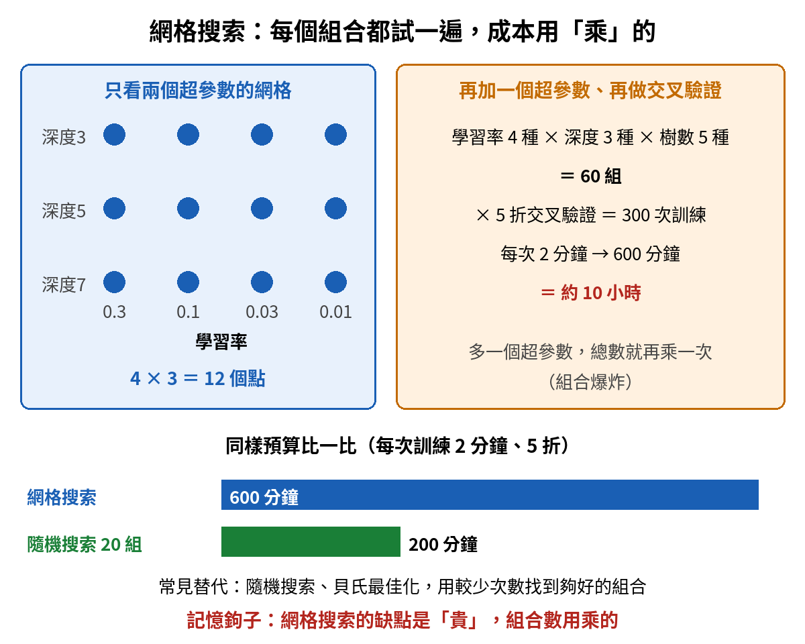
名詞各自定義
超參數調整 Hyperparameter Tuning
- 是什麼：在訓練前尋找一組最合適的超參數設定，讓模型在沒看過的資料上表現最好。
- 搭配：通常和交叉驗證一起用：把資料分成 K 份，輪流拿一份驗證、其他訓練，取平均分數。
網格搜索 Grid Search
- 怎麼運作：每個超參數列出幾個候選值，所有組合全部試一遍。
- 缺點：計算成本很高：組合數是各超參數候選數相乘，再乘上交叉驗證的折數。上圖 4 × 3 × 5 ＝ 60 組，× 5 折＝ 300 次訓練，每次 2 分鐘就要 600 分鐘（10 小時）。多加一個超參數，總數又要再乘一次。
- 另一個限制：只會在你列出的格點裡挑最好的，格點之間如果藏著更好的值，它看不到。
- 優點：簡單、徹底、結果可重現；類別型超參數（例如核函數選 linear 或 rbf）也能直接列進去。它是逐一比較每個格點，不像梯度下降那樣一步步往下走而卡在局部低點。
隨機搜索 Random Search 與貝氏最佳化 Bayesian Optimization
- 隨機搜索：從超參數範圍中隨機抽固定數量的組合來試。上圖 20 組 × 5 折＝ 100 次，只要 200 分鐘；很多情況下，用較少次數就能找到夠好的組合。
- 貝氏最佳化：根據已經試過的結果建立「分數預測模型」，挑最有希望的下一組來試，比盲目亂試更省次數。
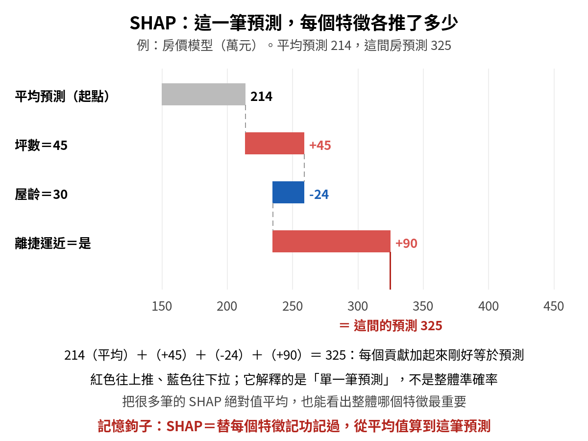
SHAP（SHapley Additive exPlanations）
- 是什麼：一種模型可解釋性方法，用來解釋單一筆預測中，每個特徵各貢獻了多少（相對於平均預測）。
- 理論來源：賽局理論的 Shapley 值：一群人合作得到獎金，依每個人的貢獻公平分配。這裡的「人」換成特徵、「獎金」換成「這筆預測和平均預測的差距」。
- 加總性：平均預測＋所有特徵的 SHAP 值＝這筆的預測。上圖：214 ＋ 45 － 24 ＋ 90 ＝ 325（線性模型可以精確算出每個 SHAP 值）。
- 全域用法：把很多筆資料的 SHAP 絕對值平均，可以看出整體上哪些特徵最重要。
- 不是拿來做的事：評估整體準確率（看準確率、F1 等指標）、挑超參數（網格搜索的工作）、找異常值（孤立森林這類異常偵測方法的工作）。
其他可解釋性名詞（對照用）
- 特徵重要性 Feature Importance：整體來說哪些特徵對模型最重要，常見於樹模型；它是「全域」的，不說明某一筆為什麼。
- LIME：在某一筆資料附近，用簡單的線性模型去近似複雜模型，也是解釋單筆預測的方法，但沒有 SHAP 的加總性保證。
深度學習框架 TensorFlow 與 PyTorch
- 是什麼：兩套主流的開源深度學習框架，用來開發與訓練神經網路與其他機器學習模型。
- 共同功能：自動微分（自動算梯度）、使用 GPU 加速、提供現成的神經網路層與最佳化器。
- TensorFlow：Google 開發、2015 年開源；常搭配高階 API Keras 使用，部署工具完整（如手機、網頁端）。
- PyTorch：Meta（原 Facebook）開發、2016 年推出，2022 年起移交 PyTorch 基金會管理；寫法貼近一般 Python，在研究界非常普及。
整合比較表
機器學習框架速查表
| 工具 | 主要用途 | 開發者 | 代表情境 | 口訣 | 容易搞混 |
|---|---|---|---|---|---|
| TensorFlow | 深度學習模型開發與訓練 | 影像辨識、語音、部署到手機 | 深度學習雙雄之一 | Tableau（名字像） | |
| PyTorch | 深度學習模型開發與訓練 | Meta／PyTorch 基金會 | 研究、生成式模型 | 深度學習雙雄之一 | Python 本身 |
| Keras | 高階神經網路 API | 開源社群（Google 支持） | 快速搭模型 | 神經網路的簡易版介面 | TensorFlow |
| scikit-learn | 傳統機器學習 | 開源社群 | 迴歸、分類、分群、網格搜索 | 單機傳統 ML | 深度學習框架 |
| Spark MLlib | 分散式機器學習 | Apache | 大資料上的分類、推薦 ALS | 大資料的 ML | scikit-learn |
| SHAP | 解釋單筆預測 | 開源套件 | 說明模型為什麼這樣判斷 | 記功記過 | 特徵重要性 |
| Matplotlib／Tableau | 資料視覺化 | （第 9 章） | 畫圖、儀表板 | 不是訓練模型 | TensorFlow |
| MySQL／PostgreSQL | 關聯式資料庫 | （第 5 章） | 存放表格資料 | 不是訓練模型 | HDFS |
| HTML／JavaScript／React | 網頁前端開發 | （網頁技術） | 做網站畫面 | 不是訓練模型 | PyTorch |
| 比較項目 | 網格搜索 | 隨機搜索 | 貝氏最佳化 |
|---|---|---|---|
| 怎麼挑組合 | 全部組合都試 | 隨機抽固定數量 | 依已試結果挑最有希望的 |
| 成本 | 最高，組合數用乘的 | 自己決定次數 | 通常比隨機更省次數 |
| 找得到最好的嗎 | 只在列出的格點裡找 | 看運氣與次數 | 通常較快接近好的區域 |
| 適合 | 超參數少、候選值少 | 超參數多、預算有限 | 每次訓練很貴 |
- 網格搜索的缺點是「貴」：組合數用乘的，還要再乘交叉驗證折數。
- SHAP＝替每個特徵記功記過：平均預測＋各特徵貢獻＝這筆預測。解釋的是單筆，不是準確率。
- TensorFlow、PyTorch＝深度學習雙雄；scikit-learn 做傳統 ML；Spark MLlib 做大資料 ML。
總整理本章要記的十句話
- Hadoop 三層：HDFS 存（區塊＋多份副本）、YARN 管（分配 CPU 和記憶體）、MapReduce 算。
- MapReduce 的兩個核心操作就是 Map（拆開各自做）和 Reduce（合起來彙總），中間由 Shuffle 分組。
- Spark 常比 MapReduce 快，主因是記憶體內計算，減少磁碟讀寫；反覆運算的工作最明顯。
- Spark 四元件：SQL 查表、Streaming 追即時、MLlib 學模型、GraphX 走關係網。
- MLlib 的 DataFrame API：統一好用、Catalyst 改計畫、Tungsten 跑得省，還有 ML Pipeline；RDD API 已進入維護模式。
- 數值範圍差太多用特徵縮放：標準化（平均 0、標準差 1）或歸一化（壓到 0～1）；特徵選擇是挑欄位，不是縮放。
- 「過去 7 天平均」是窗口特徵，「上個月同期」是滯後特徵；學低維嵌入用自動編碼器，線性降維用 PCA。
- Bagging 平行投票（隨機森林）治不穩定；Boosting 依序訂正錯誤（AdaBoost、GBDT）治學不夠。
- 用過去評分預測沒評過的物品＝矩陣分解（SVD、ALS），屬於協同過濾。
- 網格搜索的缺點是貴；SHAP 解釋單筆預測中各特徵的貢獻；TensorFlow、PyTorch 做深度學習。
考前速查全章名詞總彙整表
把五個單元的比較表濃縮成一張。複習時遮住右邊三欄，看名詞說得出定義，再對照。
| 名詞 | 一句話定義 | 口訣 | 容易跟誰搞混 |
|---|---|---|---|
| 單元 ① Hadoop 生態系與 Spark | |||
| HDFS | 在叢集上可靠地存超大檔案（區塊＋副本） | 倉庫 | YARN |
| NameNode／DataNode | 記錄區塊位置／實際存放資料 | 目錄與貨架 | ResourceManager |
| YARN | 叢集資源管理器，分配 CPU 和記憶體 | 調度中心 | MapReduce |
| MapReduce | Map 拆開做、Shuffle 分組、Reduce 合起來 | 拆開做、合起來 | Shuffle 的排序合併 |
| Spark | 記憶體內計算的分散式引擎 | 東西放桌上 | MapReduce |
| Spark SQL | 用 SQL／DataFrame 處理結構化資料 | 查表 | MLlib |
| Spark Streaming | 處理即時資料流（新版 Structured Streaming） | 追即時 | Kafka |
| MLlib | Spark 的機器學習函式庫 | 學模型 | GraphX |
| GraphX | Spark 的圖運算元件 | 走關係網 | MLlib |
| RDD | 最底層、沒有欄位名稱的分散式資料集 | 一串物件 | DataFrame |
| DataFrame | 有欄位名稱與型別的分散式表格 | 看得懂欄位 | RDD |
| Catalyst／Tungsten | 查詢優化器／執行層效率引擎 | 改計畫／跑得省 | 彼此 |
| ML Pipeline | 把轉換、訓練、預測串成固定流程 | 生產線 | DAG |
| 單元 ② 特徵工程 | |||
| 特徵縮放 | 把不同範圍的數值換成同一把尺 | 換同一把尺 | 特徵選擇 |
| 標準化 | （x − 平均）÷ 標準差，平均 0、標準差 1 | z 分數 | 歸一化 |
| 歸一化（最小最大） | 壓到 0 到 1 之間 | 壓進 0～1 | 標準化 |
| 獨熱編碼 | 每個類別開一欄 0／1 | 類別少用獨熱 | 特徵縮放 |
| 特徵雜湊 | 用雜湊丟進固定數量的桶 | 類別超多用雜湊 | 獨熱編碼 |
| 滯後特徵 | 過去某個時間點的值當今天的欄位 | 回頭看某一天 | 窗口特徵 |
| 窗口特徵 | 一段過去時間的統計量（如 7 天平均） | 框一段時間 | 滯後特徵 |
| PCA | 線性降維，找變化最大的方向 | 找一條直線 | 特徵選擇 |
| 自動編碼器 | 神經網路先壓縮再還原，中間層＝嵌入 | 中間那層是精華 | SVM |
| 特徵選擇 | 挑出部分原始欄位保留 | 挑欄位 | 降維、縮放 |
| 單元 ③ 集成學習 | |||
| 弱學習器 | 只比亂猜好一點的簡單模型 | 小樹 | 強學習器 |
| Bagging | 有放回抽樣、平行訓練、投票 | 一起投票 | Boosting |
| 隨機森林 | Bagging＋分岔時隨機挑欄位 | 很多樹投票 | Boosting |
| Boosting | 依序訓練、後面訂正前面的錯、加權合成 | 接力訂正 | 隨機森林 |
| AdaBoost／GBDT | 加重分錯樣本的權重／學殘差 | 加權錯誤／補差額 | Bagging |
| 單元 ④ 推薦系統 | |||
| 協同過濾 | 只看使用者與物品的互動紀錄來推薦 | 看人的行為 | 內容式推薦 |
| 矩陣分解 | 評分表拆成人、物品兩張潛在因子表 | 補空格 | 線性迴歸 |
| SVD（推薦用） | 只用已知格訓練的分解法 | 經典分解 | 完整 SVD |
| ALS | 交替固定一邊、解另一邊 | 輪流解 | 梯度下降 |
| 冷啟動 | 新用戶、新物品沒有紀錄難推薦 | 沒資料就難猜 | 資料稀疏 |
| 單元 ⑤ 調參、可解釋性與框架 | |||
| 超參數 | 訓練前由人設定的值（學習率、深度） | 人設的 | 參數 |
| 網格搜索 | 全部組合都試，成本用乘的 | 貴 | 隨機搜索 |
| 隨機搜索／貝氏最佳化 | 抽樣試／依已試結果挑下一組 | 省次數 | 網格搜索 |
| SHAP | 單筆預測中各特徵的貢獻，總和＝預測－平均 | 記功記過 | 特徵重要性 |
| TensorFlow／PyTorch | 深度學習模型開發與訓練框架 | 深度學習雙雄 | 視覺化工具 |
| scikit-learn | 單機傳統機器學習函式庫 | 傳統 ML | Spark MLlib |
動手練自我檢測 10 題
自編情境練習，練的是「看情境選工具、選方法」。先自己想好答案，再點「看答案」。
- 公司每天產生 3TB 的機台日誌，要放在 50 台一般伺服器上，而且其中一台壞掉時資料不能遺失。Hadoop 裡負責這件事的是哪個組件？它靠什麼機制做到不遺失？
看答案
HDFS。檔案切成區塊，每塊預設複製 3 份放在不同電腦，一台壞掉還能從其他副本讀到。
- 同一個 Hadoop 叢集上，行銷部的 Spark 報表和工程部的 MapReduce 批次工作同時在跑，誰來決定各自能用多少 CPU 和記憶體？
看答案
YARN。它是叢集資源管理器，ResourceManager 統一分配 CPU 和記憶體給不同的應用程式。
- 要統計 1 億則留言中每個關鍵字出現幾次。請用 MapReduce 的兩個階段說明：第一階段每台電腦在做什麼？第二階段在做什麼？
看答案
Map 階段：每台電腦處理自己那份留言，每看到一個關鍵字就輸出（關鍵字, 1）。Reduce 階段：系統先把同一關鍵字的配對分到同一處（Shuffle），再把它們加總成出現次數。
- 同事說：「Spark 比 MapReduce 快，是因為 Spark 用比較快的程式語言寫的。」這句話哪裡不對？主要原因是什麼？
看答案
主要原因不是程式語言，而是記憶體內計算：Spark 把中間結果盡量留在記憶體，減少磁碟讀寫，反覆運算時差距最明顯。（而且 Spark 主要用 Scala、MapReduce 用 Java，兩者都跑在 JVM 上。）
- 你要在 Spark 上做三件事：(1) 用 SQL 算各縣市營收、(2) 分析會員之間的推薦關係網找出關鍵人物、(3) 訓練一個流失預測模型。各用哪個元件？
看答案
(1) Spark SQL；(2) GraphX（會員和關係是點和線組成的圖）；(3) MLlib（機器學習）。
- 一份資料有「身高（公分）」和「年薪（元）」兩個欄位，要拿去做 KNN 分類。應該先做什麼處理？如果改用決策樹，這一步一樣重要嗎？
看答案
先做特徵縮放（標準化或歸一化），否則年薪的大數字會主導距離。決策樹是依門檻切分，通常不太受尺度影響，這一步相對沒那麼重要。
- 要預測明天的便當銷量，你新增了兩個欄位：「昨天的銷量」和「過去 14 天的平均銷量」。這兩個欄位各屬於哪一種特徵？做這兩個欄位時要注意什麼？
看答案
「昨天的銷量」是滯後特徵，「過去 14 天平均」是窗口特徵。要注意只用預測日以前的資料，不要把當天或未來的值算進去（避免資料洩漏）。
- 資料有 300 個欄位，你想壓成 10 個濃縮特徵來畫圖和分群，而且懷疑欄位之間有彎曲的非線性關係。PCA 和自動編碼器哪個比較合適？如果只是想「留下最有用的 20 個原始欄位」，又該用什麼？
看答案
自動編碼器比較合適，它能學非線性關係，中間瓶頸層輸出的就是 10 維嵌入；PCA 只找線性方向。只想留下 20 個原始欄位，則用特徵選擇。
- 一個模型的做法是：先訓練一棵小樹，把它分錯的資料加重，再訓練第二棵小樹專門補救，如此重複 100 次後加權合成。這是 Bagging 還是 Boosting？隨機森林屬於哪一種？
看答案
Boosting（依序、加重分錯的資料、加權合成，像 AdaBoost）。隨機森林屬於 Bagging（平行訓練、投票）。
- 你要調 3 個超參數，候選值分別有 5、4、6 種，並做 10 折交叉驗證。網格搜索總共要訓練幾次？如果模型預測某位客戶會流失，主管問「為什麼是他」，可以用什麼方法說明每個特徵的影響？
看答案
5 × 4 × 6 ＝ 120 組，× 10 折＝ 1,200 次訓練。解釋單一客戶的預測可以用 SHAP：平均預測加上各特徵的 SHAP 值等於這位客戶的預測，正值代表推高流失機率、負值代表拉低。